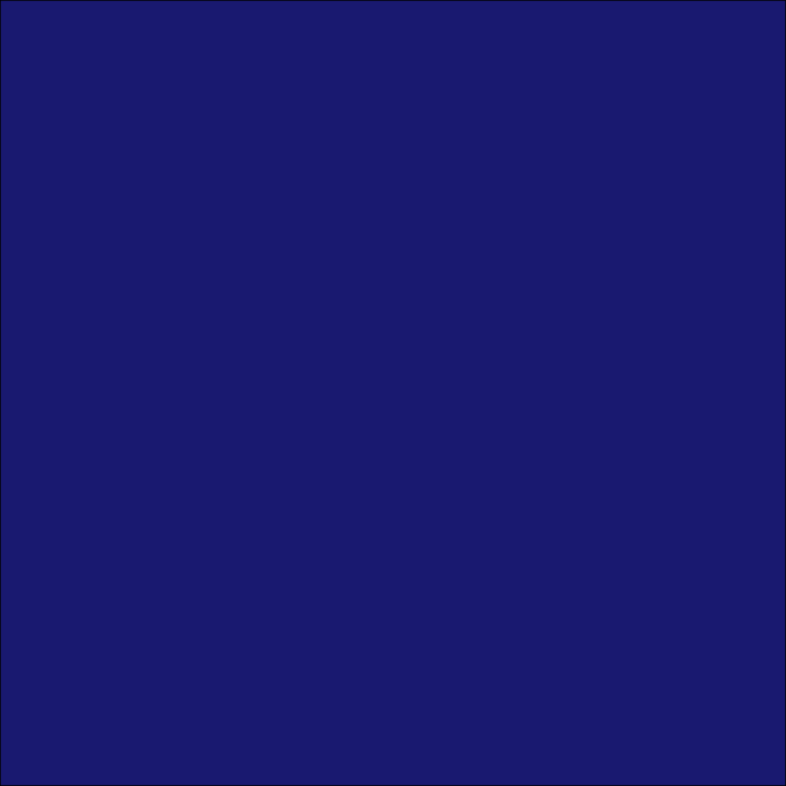
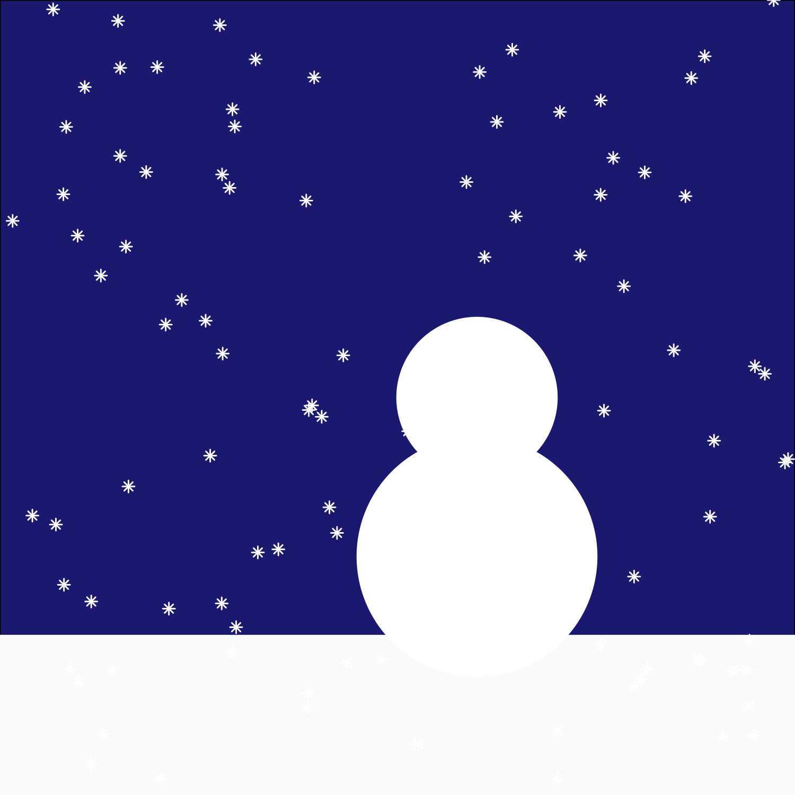
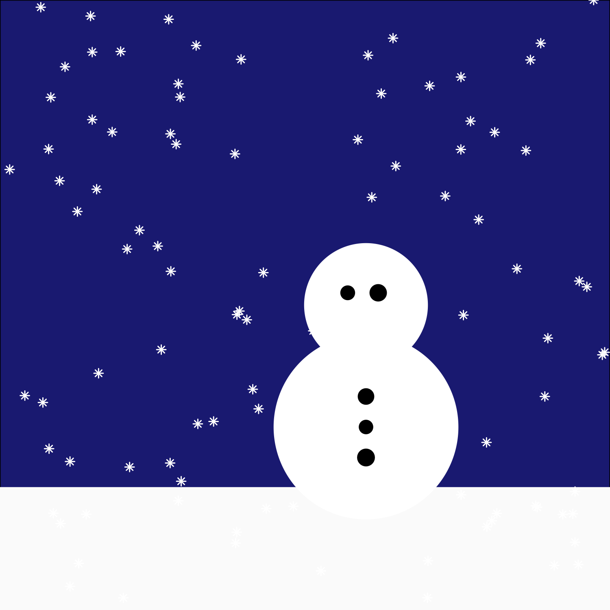
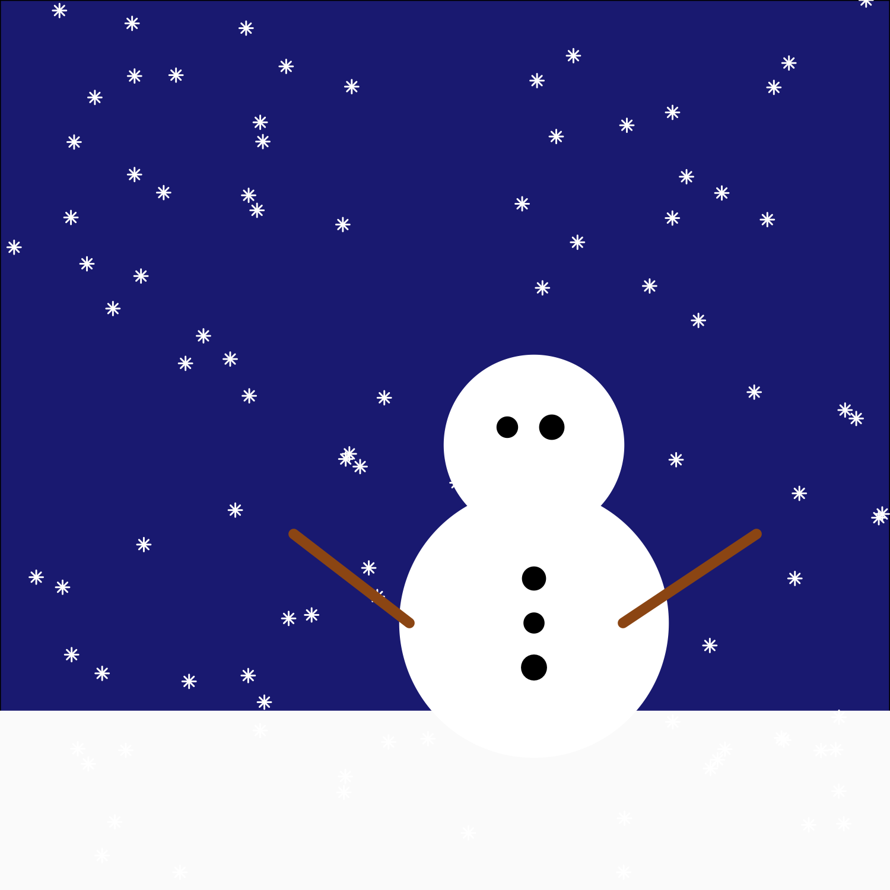
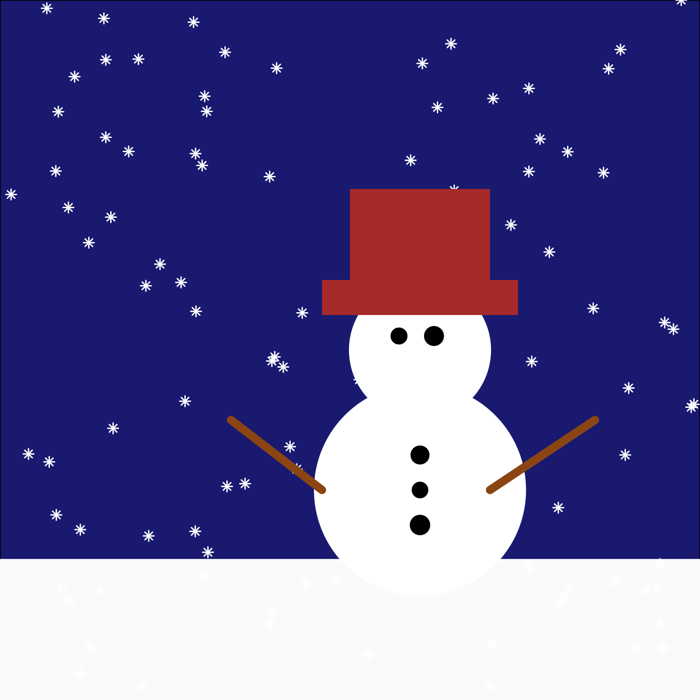
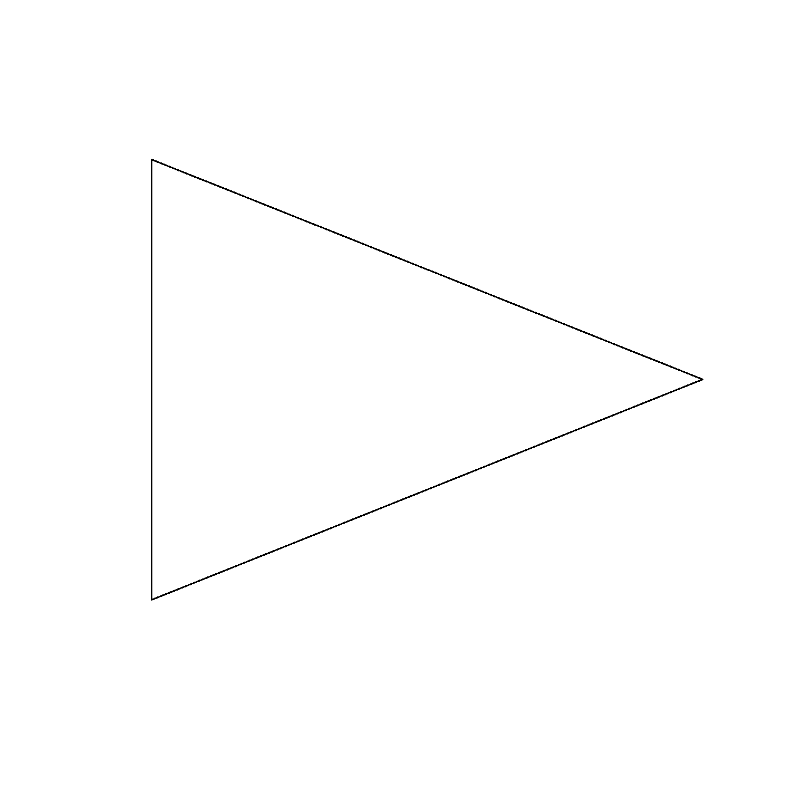
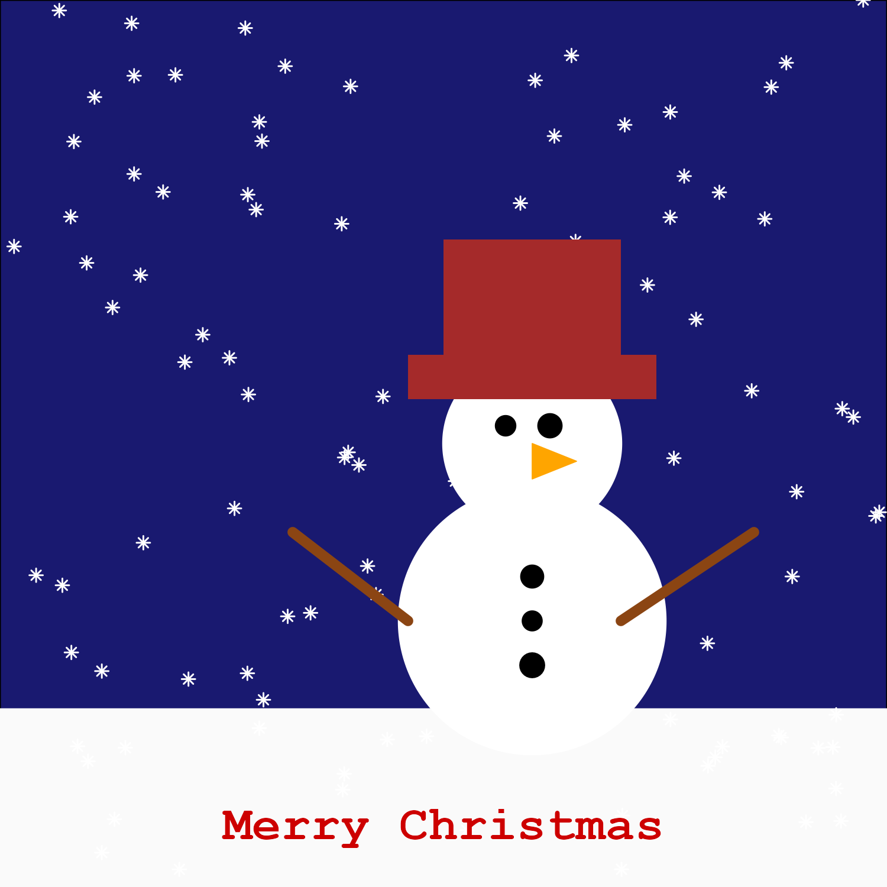

When you think about data visualisation in R (R Core Team 2022), you’d be forgiven for not jumping straight to thinking about creating Christmas cards. However, the package and functions we often use to create bar charts and line graphs can be repurposed to create festive images. This tutorial provides a step-by-step guide to creating a Christmas card featuring a snowman – entirely in R. Though this seems like just a fun exercise, the functions and techniques you learn in this tutorial can also transfer into more traditional data visualisations created using {ggplot2} (Wickham 2016) in R.
The code in this tutorial relies on the following packages:
library(ggplot2)
library(ggforce)
library(sf)You may also have seen this tutorial presented at the Oxford R User Group November 2023 Meetup.
Let’s build a snowman!
Before we jump in to writing R code, let’s take a step back and think about what you actually need to build a snowman. If you were given some crayons and a piece of paper, what would you draw?
You might draw two or three circles to make up the head and body. Perhaps some smaller dots for buttons and eyes, and a (rudimentary) hat constructed from some rectangles. Some brown lines create sticks for arms and, of course, a triangle to represent a carrot for a nose. For the background elements of our Christmas card, we also need the night sky (or day if you prefer), a light dusting of snow covering the ground, and a few snowflakes falling from the sky.
Now lines, rectangles, circles, and triangles are all just simple geometric objects. Crucially, they’re all things that we can create with {ggplot2} in R.
Build a snowman with R
Let’s start with the background. The easiest way to start with a blank canvas in {ggplot2} is to create an empty plot using ggplot() with no arguments. We can also remove all theme elements (such as the grey background and grid lines) with theme_void(). To change the background colour to a dark blue for the night sky, we can edit the plot.background element of the theme using element_rect() (since the background is essentially just a big rectangle).
In {ggplot2} fill is the inner colour of shapes whilst colour is the outline colour. You can specify colours in different ways in R: either via the rgb() function, using a character string for a hex colour such as "#000000", or using a named colour. If you run colors(), you’ll see all the valid named colours you can use. Here, we’ve picked "midnightblue".
Let’s save this initial plot as an object s1 that we’ll keep adding layers to. Saving plots in different stages of styling as objects can help to keep your code more modular.
s1 <- ggplot() +
theme_void() +
theme(
plot.background = element_rect(
fill = "midnightblue"
)
)
s1Next we’ll add some snow on the ground. We’ll do this by drawing a white rectangle along the bottom of the plot. There are two different functions that we could use to add a rectangle: geom_rect() or annotate(). The difference between the two is that geom_rect() maps columns of a data.frame to different elements of a plot whereas annotate() can take values passed in as vectors. Most of the {ggplot2} graphs you’ll see will use geom_*() functions. However, if you’re only adding one or two elements to a plot then annotate() might be quicker.
Since we’re only adding one rectangle for the snow, it’s easier to use annotate() with the "rect" geometry. This requires four arguments: the minimum and maximum x and y coordinates of the rectangle – essentially specifying where the corners are. We can also change the colour of the rectangle and its outline using the fill and colour arguments. Here, I’ve used a very light grey instead of white.
If we don’t set the axis limits using xlim() and ylim(), the plot area will resize to fit the area of the snow rectangle. The night sky background will disappear. You can choose any axis limits you wish here – but the unit square will make it easier to find the right coordinates when deciding where to position other elements. Finally, we add coord_fixed() to fix the 1:1 aspect ratio and make sure our grid is actually square with expand = FALSE to remove the additional padding at the sides of the plot.
s2 <- s1 +
annotate(
geom = "rect",
xmin = 0, xmax = 1,
ymin = 0, ymax = 0.2,
fill = "grey98",
colour = "grey98"
) +
xlim(0, 1) +
ylim(0, 1) +
coord_fixed(expand = FALSE)
s2

To finish off the background, we’ll add some falling snowflakes. We first need to decide where on the plot the snowflakes will appear. We’ll be plotting lots of snowflakes, so manually typing out the coordinates of where they’ll be would be very inefficient. Instead, we can use functions to generate the locations randomly. For this we’ll use the uniform distribution. The uniform distribution has two parameters – the lower and upper bounds where any values between the bounds are equally likely. You can generate samples from a uniform distribution in R using the runif() function.
When generating random numbers in R (or any other programming language), it’s important to set a seed. This means that if you give your code to someone else, they’ll get the same random numbers as you. Some people choose to use the date as the random seed and since we’re making Christmas cards, we’ll use Christmas day as the random seed – in yyyymmdd format, of course!
We create a variable n specifying how many snowflakes we’ll create. Creating a variable rather than hard coding the variables makes it easier to vary how many snowflakes we want. Since our plot grid goes between 0 and 1 in both the x and y directions, we generate random numbers between 0 and 1 for both the x and y coordinates and store the values in a data.frame called snowflakes.
set.seed(20231225)
n <- 100
snowflakes <- data.frame(
x = runif(n, 0, 1),
y = runif(n, 0, 1)
)Now we can plot the snowflakes data using geom_point() – the same function you’d use for a scatter plot. Since we’re using a geom_*() function, we need to tell {ggplot2} which columns go on the x and y axes inside the aes() function. To plot the snowflakes, we’re going to make using of R’s different point characters. The default when plotting with geom_point() is a small black dot, but we can choose to use a small star (close enough to a snowflake!) by setting pch = 8 and changing the colour to "white".
s3 <- s2 +
geom_point(
data = snowflakes,
mapping = aes(
x = x,
y = y
),
colour = "white",
pch = 8
)
s3Now comes the part where we start rolling up some snowballs! Or, in the case of an R snowman, we draw some circles. Unfortunately, there isn’t a built-in geom_*() function in {ggplot2} for plotting circles. We could use geom_point() here and increase the size of the points but this approach can look a little bit fuzzy when the points are very large. Instead, we’ll turn to a {ggplot2} extension package for some additional geom_* functions - {ggforce} (Pedersen 2022).
The geom_circle() function requires at least three elements mapped to the aesthetics inside aes(): the coordinates of the centre of the circle given by x0 and y0, and the radii of each of the circles, r. Instead of creating a separate data frame and passing it into geom_circle(), we can alternatively create the data frame inside the function. The fill and colour arguments work as they do in {ggplot2} and we can set both to "white".
s4 <- s3 +
geom_circle(
data = data.frame(
x0 = c(0.6, 0.6),
y0 = c(0.3, 0.5),
r = c(0.15, 0.1)
),
mapping = aes(x0 = x0, y0 = y0, r = r),
fill = "white",
colour = "white"
)
s4

We can use geom_point() again to add some more points to represent the buttons and the eyes. Here, we’ll manually specify the coordinates of the points. For the buttons we add them in a vertical line in the middle of the snowman’s body circle, and for the eyes we add them in a horizontal line in the middle of the head circle.
Since no two rocks are exactly the same size, we can add some random variation to the size of the points using runif() again. We generate five different sizes between 2 and 4.5. For reference, the default point size is 1.5. Adding scale_size_identity() means that the sizes of the points are actually equally to the sizes we generated from runif() and removes the legend that is automatically added when we add size inside aes().
s5 <- s4 +
geom_point(
data = data.frame(
x = c(0.6, 0.6, 0.6, 0.57, 0.62),
y = c(0.25, 0.3, 0.35, 0.52, 0.52),
size = runif(5, 2, 4.5)
),
mapping = aes(x = x, y = y, size = size)
) +
scale_size_identity()
s5To add sticks for arms, we can make use of geom_segment() to draw some lines. We could also use geom_path() but that is designed to connect points across multiple cases, whereas geom_segment() draws a single line per row of data – and we don’t want to join the snowman’s arms together!
To use geom_segment() we need to create a data frame containing the x and y coordinates for the start and end of each line, and then pass this into the aesthetic mapping with aes(). We can control the colour and width of the lines using the colour and linewidth arguments. Setting the lineend argument to "round" means that the ends of the lines will be rounded rather than the default straight edge.
s6 <- s5 +
geom_segment(
data = data.frame(
x = c(0.46, 0.7),
xend = c(0.33, 0.85),
y = c(0.3, 0.3),
yend = c(0.4, 0.4)
),
mapping = aes(x = x, y = y, xend = xend, yend = yend),
colour = "chocolate4",
lineend = "round",
linewidth = 2
)
s6

We’ll now add a (very simple) hat to our snowman, fashioned out of two rectangles. We can add the rectangles as we did before using the annotate() function and specifying the locations of the corners of the rectangles. We start with a shorter wider rectangle for the brim of the hat, and then a taller, narrower rectangle for the crown of the hat. Since we’ll colour them both "brown", it doesn’t matter if they overlap a little bit.
This might be one of the situations we should have used geom_rect() instead of annotate() but it might take a lot of trial and error to position the hat exactly where we want it, and this seemed a little easier with annotate().
s7 <- s6 +
annotate(
geom = "rect",
xmin = 0.46, xmax = 0.74,
ymin = 0.55, ymax = 0.60,
fill = "brown"
) +
annotate(
geom = "rect",
xmin = 0.50, xmax = 0.70,
ymin = 0.56, ymax = 0.73,
fill = "brown"
)
s7Now we can move on to the final component of building a snowman – the carrot for his nose! We’re going to use a triangle for the nose. Unfortunately, there are no built-in triangle geoms in {ggplot2} so we’ll have to make our own. There are different ways to do this, but here we’re going to make use of the {sf} package (Pebesma 2018). The {sf} package (short for simple features) is designed for working with spatial data. Although we’re not working with maps, we can still use {sf} to make shapes – including polygons.
We start by constructing a matrix with two columns – one for x coordinates and one for y. The x coordinates start in the middle of the head and go slightly to the right for the triangle point. The y coordinates take a little bit more trial and error to get right. Note that although triangles only have three corners, we have four rows of points. The last row must be the same as the first to make the polygon closed. The matrix is then converted into a spatial object using the st_polygon() function, and we can check how it looks using plot().
nose_pts <- matrix(
c(
0.6, 0.5,
0.65, 0.48,
0.6, 0.46,
0.6, 0.5
),
ncol = 2,
byrow = TRUE
)
nose <- st_polygon(list(nose_pts))
plot(nose)

We can plot sf objects with {ggplot2} using geom_sf(). geom_sf() is a slightly special geom since we don’t need to specify an aesthetic mapping for the x and y axes – they are determined automatically from the sf object along with which type of geometry to draw. If your sf object has points, points will be drawn. If it has country shapes, polygons will be drawn. Like other geom_*() functions, we can change the colour and fill arguments to a different colour – in this case "orange" to represent a carrot!
You should see a Coordinate system already present. Adding new coordinate system, which will replace the existing one. message when you run the following code. The is because geom_sf forces it’s own coordinate system on the plot overriding our previous code specifying coord_fixed(). If you run it without the coord_sf(expand = FALSE), the extra space around the plot will reappear. We can remove it again with expand = FALSE.
s8 <- s7 +
geom_sf(
data = nose,
fill = "orange",
colour = "orange"
) +
coord_sf(expand = FALSE)
s8You could skip the
sfpart of this completely and pass the coordinates directly intogeom_polygon()instead. However, I’ve often found it quicker and easier to tinker with polygon shapes usingsf.
A key part of any Christmas card is the message wishing recipients a Merry Christmas! We can add text to our plot using the annotate() function and the "text" geometry (you could instead use geom_text() if you prefer). When adding text, we require at least three arguments: the x and y coordinates of where the text should be added, and the label denoting what text should appear. We can supply additional arguments to annotate() to style the text, such as: colour (which changes the colour of the text); family (to define which font to use); fontface (which determines if the font is bold or italic, for example); and size (which changes the size of the text). The "mono" option for family tells {ggplot2} to use the default system monospace font.
s9 <- s8 +
annotate(
geom = "text",
x = 0.5, y = 0.07,
label = "Merry Christmas",
colour = "red3",
family = "mono",
fontface = "bold", size = 7
)
s9
Sending Christmas cards in R
Now that we’ve finished creating our Christmas card, we need to think about how to send it. You could save it as an image file using ggsave(), print it out, and send it in the post. Or you could also use R to send it!
There are many different R packages for sending emails from R. If you create a database of email addresses and names, you could personalise the message on the Christmas card and then send it automatically as an email from R. If you want to automate the process of sending physical cards from R, you might be interested in the {ggirl} package from Jacqueline Nolis (Nolis 2023). {ggirl} allows you to send postcards with a ggplot object printed on the front. {ggirl} is also an incredible example of an eCommerce platform built with R! Note that {ggirl} can currently only send physical items to addresses in the United States.
Other Christmas R packages
If you’re curious about making Christmas cards with R but you don’t have the time to make them from scratch, you’ll likely find the christmas R package (Barrera-Gomez 2022) helpful. This package from Jose Barrera-Gomez can generate lots of different Christmas cards, many of them animated and available in different languages (English, Catalan and Spanish).
Emil Hvitfeldt has also created a Quarto extension that gives the effect of falling snowflakes on HTML outputs – including revealjs slides which is perfect for festive presentations!
Have you made your own Christmas cards with R? We’d love to see your designs!
Inspired by Nicola’s tutorial, Real World Data Science has indeed made its own Christmas card design. Check out our attempt over at the Editors’ Blog!
- About the author
- Nicola Rennie is a lecturer in health data science in the Centre for Health Informatics, Computing, and Statistics (CHICAS) within Lancaster Medical School at Lancaster University. She’s an R enthusiast, data visualisation aficionado, and generative artist, among other things. Her personal website is hosted at nrennie.rbind.io, and she is a co-author of the Royal Statistical Society’s Best Practices for Data Visualisation.
- Copyright and licence
- © 2023 Nicola Rennie

 This article is licensed under a Creative Commons Attribution 4.0 (CC BY 4.0) International licence.
This article is licensed under a Creative Commons Attribution 4.0 (CC BY 4.0) International licence.
- How to cite
-
Rennie, Nicola. 2023. “Creating Christmas cards with R.” Real World Data Science, December 12, 2023.